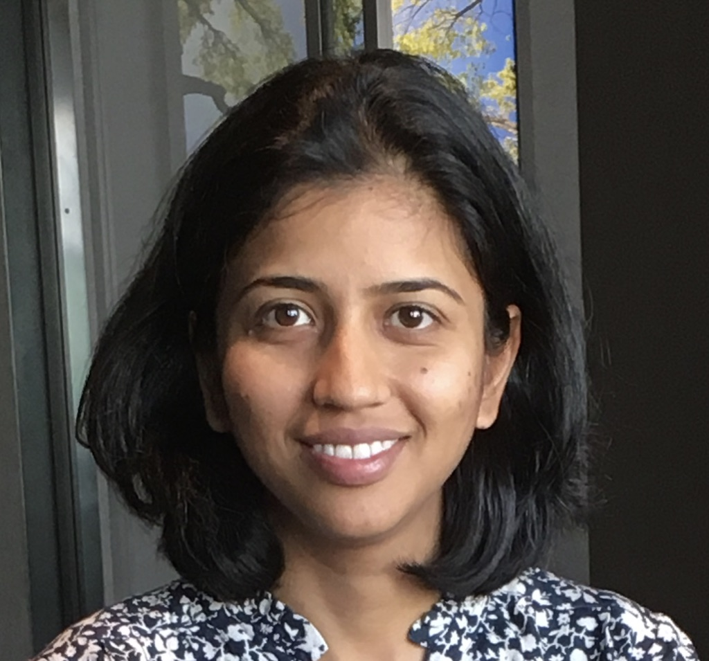

{% endif %}
{% endif %}
{{paper.authors}}.
{{paper.conference}}
|  |
Richa Rastogi[Github] [Google Scholar] [Twitter] |
Hi! I'am a Computer Science PhD Student at Cornell University and I'am very fortunate to be advised by Professor Thorsten Joachims.
My research interests center on responsible machine learning. I am interested in developing methods and theory for different aspects of responsible ML, including bias, fairness issues and their long term dynamics.
Prior to starting PhD, I spent several years working as a Data Scientist at Amazon Advertising and as a Controls Engineer at Amazon Fullfillment Technologies,
where I developed models and code that were deployed in production systems and published a patent.
If you're an undergrad or Master's student at Cornell and are interested in working with me, please don't hesitate to reach out! My email is rr568 at cornell dot edu.
My full list of papers and patents are here.
|
{% if paper.image %}
{% endif %}
|
{{paper.title}}
{{paper.authors}}. {{paper.conference}} |